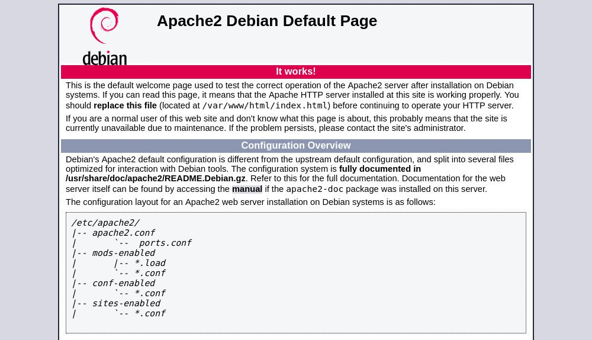

如何在 Debian 10 Linux 上安装 Apache Web Server
•
约 900 字
, 预计阅读时间 4 分钟
Apache HTTP 服务器是世界上最受欢迎的 Web 服务器之一。它是一个开源和跨平台的 HTTP 服务器，为大部分互联网网站提供支持。 Apache 提供了许多强大的功能，可以通过其他模块进行扩展。
在本教程中，我们将解释如何在 Debian 10 ， Buster 上安装 Apache 。
先决条件
在开始本教程之前，请确保以具有 sudo 权限的用户身份登录。
安装 Apache
Apache 软件包在默认的 Debian 存储库中可用。
安装非常简单。使用以下命令更新程序包索引并安装 Apache Web 服务器：
sudo apt update
sudo apt install apache2
就是这样， Apache 已经安装并自动启动。要检查状态类型：
sudo systemctl status apache2
● apache2.service - The Apache HTTP Server
Loaded: loaded (/lib/systemd/system/apache2.service; enabled; vendor preset:
Active: active (running) since Sat 2019-07-27 13:55:49 PDT; 21s ago
...
调整防火墙
UFW 用户可以通过启用 ‘Apache Full’ 配置文件来打开 HTTP(80) 和 HTTPS(443) 端口：
sudo ufw allow 'Apache Full'
如果使用 nftables 过滤与系统的连接，请通过发出以下命令打开必要的端口：
nft add rule inet filter input tcp dport {80, 443} ct state new,established counter accept
验证 Apache 安装
要验证 Apache 是否正常工作，请打开浏览器，键入服务器 IP 地址或域名 http://YOUR_IP_OR_DOMAIN/ ，您将看到默认的 Apache 欢迎页面，如下所示：

该页面包含有关 Apache 配置文件，帮助程序脚本和目录位置的基本信息。
Apache 配置文件的结构和最佳实践
- 在基于 Debian 的系统中， Apache 配置文件位于
/etc/apache2目录中。 - 主要的 Apache 配置文件是
/etc/apache2/apache2.conf。 - Apache将侦听的端口在
/etc/apache2/ports.conf文件中指定。 - Apache Virtual Hosts 文件位于
/etc/apache2/sites-available目录中。除非链接到/etc/apache2/sites-enabled目录，否则 Apache 不使用此目录中找到的配置文件。 - 您可以通过使用目录
sites-available中的配置文件在目录sites-enabled中通过a2ensite命令创建符号链接来激活虚拟主机指令。要停用虚拟主机，请使用a2dissite命令。 - 强烈建议遵循标准命名约定，例如，如果您的域名是
mydomain.com域名配置文件，则应该命名/etc/apache2/sites-available/mydomain.com.conf - 用于加载各种 Apache 模块的配置文件位于
/etc/apache2/mods-available目录中。mods-available可以通过使用a2enconf命令创建目录/etc/apache2/mods-enable的符号链接并使用命令禁用来启用目录中的配置a2disconf。 - 包含全局配置片段的文件存储在
/etc/apache2/conf-available目录中。conf-available可以通过/etc/apache2/conf-enabled使用a2enconf命令创建符号链接。当然可以使用a2disconf命令禁用目录中的文件。 - Apache 日志文件 (
access.log和error.log) 位于/var/log/apache目录中。建议使用不同access和error日志文件为每个虚拟主机。 - 您可以将域文档根目录设置为所需的任何位置。 webroot 最常见的位置包括：
/home/<user_name>/<site_name>/var/www/<site_name>/var/www/html/<site_name>/opt/<site_name>
结论
在 Debian 上安装 Apache 是运行单个命令的问题。安装后您现在可以开始部署应用程序并将 Apache 用作 Web 或代理服务器。